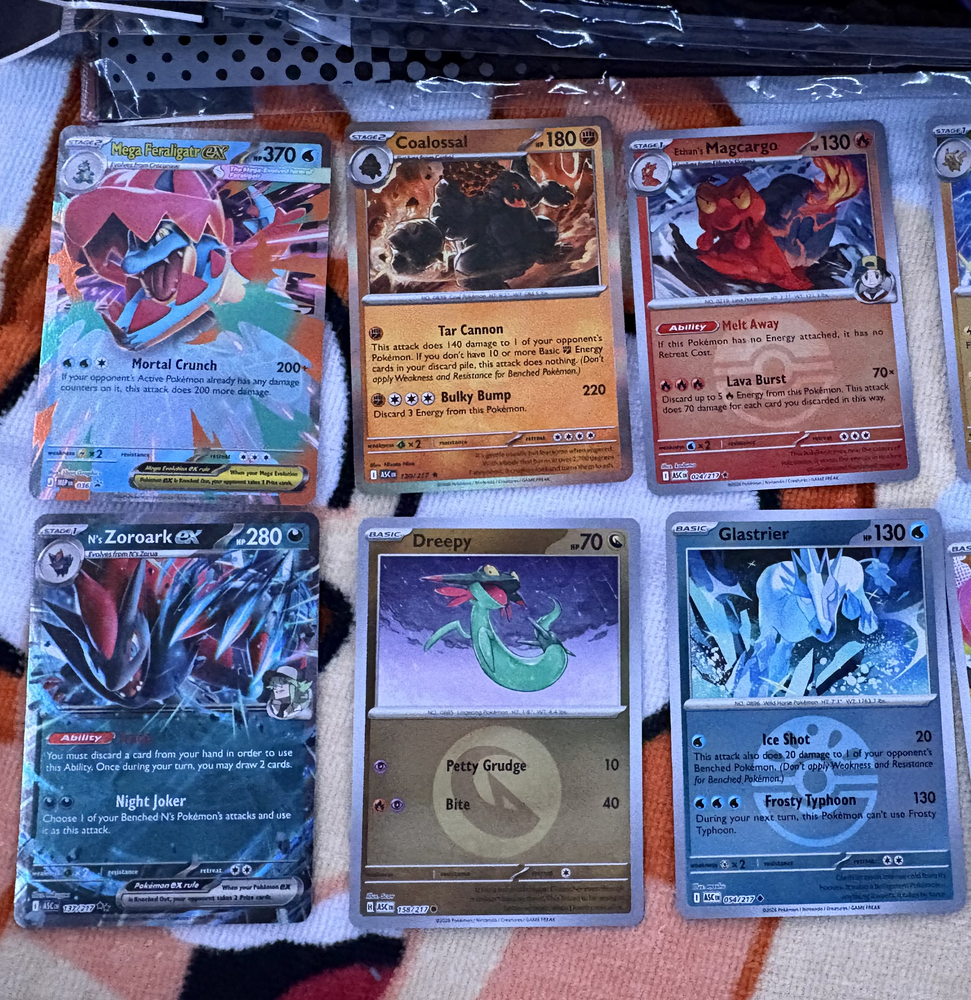

Why I Collect Pokémon Cards
I enjoy collecting Pokémon cards because I like the artwork and the excitement of finding a card I need. Opening packs is fun, but I also enjoy organizing my collection.

How I Organize My Binders
I want to complete full sets of Pokémon cards. Keeping my cards in order helps me see which ones I have and which ones I still need.
My Binder Routine
- Separate the cards by set.
- Place each card in a protective sleeve.
- Arrange the cards by their card numbers.
- Leave empty spaces for missing cards.
- Keep a checklist of cards I still need.
My Collecting Goals
My goal is to build a collection I am proud of and learn more about the cards along the way.
- Complete a full Pokémon card set.
- Build a binder featuring my favorite Pokémon.
- Learn how to judge a card's condition.
- Keep my cards protected and organized.